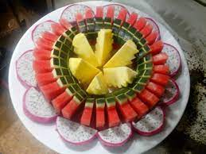
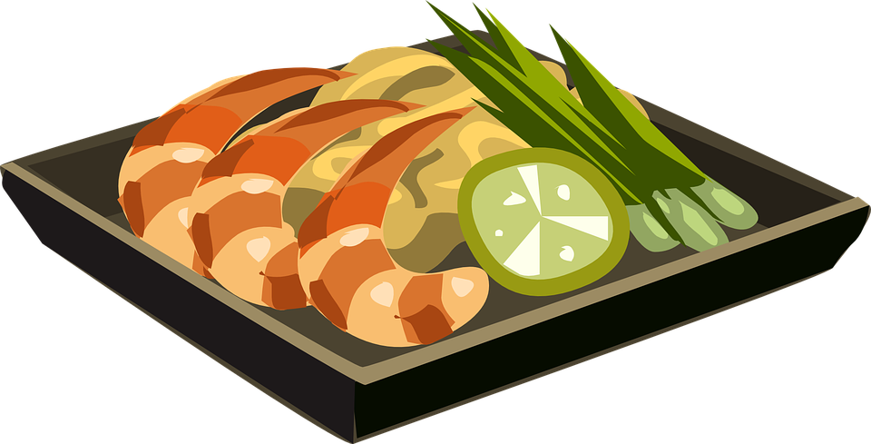

AI? Cái gì? Ở đâu?
Tình yêu và gia đình
Trầu cau
Tình yêu là gì? Là ta yêu một người trong một năm. Mỗi năm trong
1 đời người...

nói đến hạnh phúc gia đình trúng ta thường mô tả bằng những từ
thật đẹp vad được thể hiện qua những giá trị đạo đức rất đáng
trân trọng như tình yêu, lòng trung thủy, tình nghĩa vợ chồng,lòng
yêu thương, hi sinh cho con cái sự quý trọng, hiếu để của con
cháu với cham mẹ, ông bà...
thật đẹp vad được thể hiện qua những giá trị đạo đức rất đáng
trân trọng như tình yêu, lòng trung thủy, tình nghĩa vợ chồng,lòng
yêu thương, hi sinh cho con cái sự quý trọng, hiếu để của con
cháu với cham mẹ, ông bà...
Sức khỏe
10 lời khuyên trong dinh dưỡng

cơ thể chúng ta cần rất nhiều chất dinh dưỡng từ nhiều nguồn lương
thực khác nhau. Vì vậy chúng ta nên thay đổi các loại lương thực
khác nhau chúng ta không cần kkieeng chi cả - quan trọng là chú ý
đến số lượng...
thực khác nhau. Vì vậy chúng ta nên thay đổi các loại lương thực
khác nhau chúng ta không cần kkieeng chi cả - quan trọng là chú ý
đến số lượng...
Sức khỏe của chính bạn. Không hút thuốc lá tức là giảm thiểu đáng
kể rủi ro mác các loại bệnh ung thư và sức khỏe tang lên đáng kể
so với khi còn hút thuốc...
kể rủi ro mác các loại bệnh ung thư và sức khỏe tang lên đáng kể
so với khi còn hút thuốc...
Du lịch
Các tour mới nhất
- Côn Minh - Đại Lý - Lệ Giang
- Đến macau xem casino
- Về cà mau ăn tôm tít
- Đảo Bali xinh đepk - Indonesia
- Thành cổ Rome và tháp nghiêng Pisa
- Vạn lý Trường Thành
Ẩm thực
- Các món ăn mới trong tuần
- chuyên mục dạy nấu ăn
- Món ngon Hà Nội
- Các món ăn dân dã ở miền tây
Âm nhạc
Nhạc thiếu nhi
- Nắng sân trường
- Mẹ yêu không nào
- Ba bà đi bán lợn con
Dân ca
- Bèo dạt mây trôi
- Mười thương
- Lý cây bông